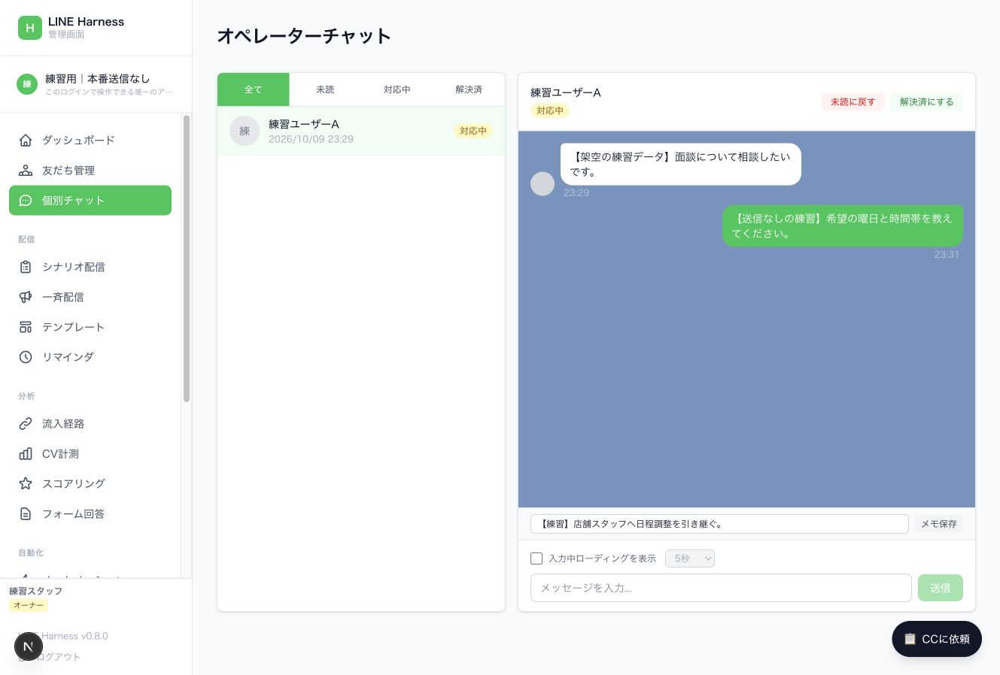
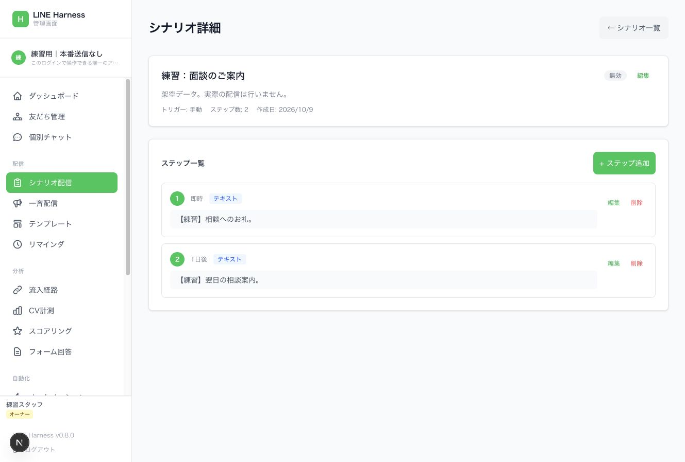
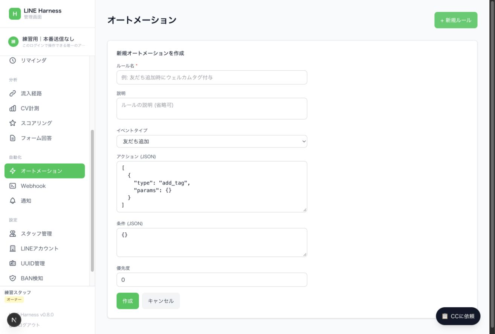

LINE Harness 操作ガイド
対象は、店舗で個別相談を受ける担当者と、診断・配信を設定する運用担当者です。初めに「対象確認」、日常業務では「個別相談」、設定変更では「自動処理」を参照してください。
1. 運用開始前の判断
現在の版では、アカウントの表示・保存・停止が一貫していません。複数アカウントが登録された管理画面で、そのまま配信を増やす運用は避けます。 左上の名前が合っているだけでは、保存先・送信先・停止対象を保証できません。
使い方の習得と、本番で安全に配信できる状態は分けて判断します。個別対応の手順は練習できますが、新規自動化と配信の有効化には、アカウント分離と停止の修正が必要です。
確認範囲
2026年10月9日に、稼働中のアカウント一覧を読み取り確認し、ローカルのソース dba7acd94d3ffcfbe398fcfbaef147da6d1bd356 と照合しました。架空データを使い、実際の管理画面コードで代表操作を練習しています。稼働中バックエンドの配布版がこのソースと完全一致するか、実機でのLINE受信が成立するかは、この確認に含みません。
このガイドの画像はすべて架空の練習環境です。実利用者のトーク、認証情報、顧客データを含みません。
2. 三つの画面の役割
| 画面 | 管理するもの | 他の画面との関係 |
|---|---|---|
| LINE Official Account Manager | 公式アカウントのプロフィール、ネイティブの応答メッセージ・カード・リッチメニュー・チャット | Harnessへの登録だけで内容が複製・同期されるわけではありません |
| LINE Developers | Messaging API、Webhook、LINE Loginなどの接続設定 | Harnessへイベントを渡し、ログインを成立させるための設定です |
| LINE Harness | 独自の友だち台帳、トーク履歴、タグ、シナリオ、配信、ルール | 接続後に受け取ったイベントを基に管理します。アカウント一覧の「有効」は受信・送信成功の証明ではありません |
既存アカウントの過去トークや友だちが、Harnessに全部取り込まれているとは限りません。「Harnessの友だち数」と「公式LINEの友だち数」は集計範囲を確かめて比較します。
3. ログインと対象確認
通常は管理画面の「LINEでログイン」を使います。スタッフは、管理者が用意した本人用のログイン導線を使います。「APIキーでログイン」は管理者が扱う代替経路であり、LINE公式アカウントのChannel Access Tokenを入れる欄ではありません。
- 管理画面のURLを確認する。本番と練習環境を区別する。
- 左上のアカウント名を読む。複数選択できる構成では、名前を押して対象を選ぶ。
- 「LINEアカウント」画面の登録一覧と、左上の操作対象を区別する。
- 希望するアカウントを選べない場合は、別アカウントのまま操作せず、管理者に画面の対象設定を確認してもらう。
「このログインで操作できる唯一のアカウント」は、現在のコードではフロントエンドの表示用許可リストでも出ます。サーバー側のアクセス制限が検証済み、という意味には使えません。
アカウント一覧の「有効」を押すと登録の有効・無効が変わります。「削除」は登録を削除します。どちらも、日々のアカウント選択用ボタンではありません。
4. 日々の個別相談
未読から対応中へ
- 「個別チャット」を開き、「未読」で絞り込む。
- 対象者の行を押し、名前と本文を確認する。
- 「対応中にする」を押す。誰が次の対応を行うか、メモに残す。
- 返信欄へ入力し、宛先・文章を確認する。
- 「送信」を押す。現在の画面はEnterでも送信するため、入力確定時に注意する。
- 自分の返信が履歴へ表示されたか確認する。LINE側での受信確認が必要なテストでは、本人の端末でも確認する。
チャットを開いただけでは自動的に「対応中」へ変わりません。履歴への表示と、利用者がメッセージを読んだことも別です。
店舗スタッフへの引継ぎ
「メモを入力...」に、担当、次の対応、候補日時、回答待ちかどうかを記入して「メモ保存」を押します。メモ保存はLINEへ送る操作ではありません。不要な個人情報は書かず、業務に必要な範囲だけ残します。
面談日時が確定し、案内が済んだら「解決済にする」を押します。この状態変更は「面談実施」「採用」「自動追客の停止」を意味しません。面談申込・日時確定・来店・採用は別々に管理します。
入力中ローディング
「入力中ローディングを表示」は、入力時にLINE側へローディング表示を要求する設定です。AIが相談文を読んだり、返信を考えたりする機能ではありません。テストではOFFのままにし、実運用で使う場合は表示開始だけでも外部APIへの操作になることを理解します。

5. タグで相談者を整理する
- 「友だち管理」で対象者の行を押す。行が展開して「タグ管理」が出る。
- 「タグを追加」を押し、既存タグを選び「追加」を押す。
- 行にタグが出ることを確認する。
- 上部の「タグで絞り込み」で対象タグを選ぶ。
タグは「診断タイプ」「面談希望」「日程確定」などの分類に使えます。LINE公式側のラベルとHarnessのタグは別管理です。
タグ付与は分類だけとは限りません。 現在のコードはタグ付与でシナリオや自動化を起動できます。実利用者へ付ける前に、どのルールが動くかを確認します。タグ作成専用の管理ページは現在ありません。
6. 自動処理の違い
| 機能 | きっかけ | 用途 | 操作場所 |
|---|---|---|---|
| キーワード自動応答 | 利用者のメッセージ、カードのpostback | 診断結果、質問への返答 | APIで設定。専用編集ページなし |
| シナリオ配信 | 友だち追加、タグ付与、手動登録 | 登録後に順番に案内 | 「シナリオ配信」＋登録・停止のAPI |
| オートメーション | 受信、タグ変更、予約などのイベント | タグ付与、シナリオ開始・停止、メッセージなど | 「オートメーション」。条件・動作はJSON |
| リマインダ | 特定の日時 | 面談前日・直前の案内 | 「リマインダ」で定義、個人と基準日時の登録はAPI |
| 一斉配信 | 運用担当者が作成した配信 | 全員・指定タグへの告知 | 「一斉配信」 |
複数の機能を同じ出来事に重ねると、重複案内が起きます。「いつ」「誰へ」「どれが送る」「何で止まる」を各メッセージに一つずつ決めます。
7. 診断結果をLINEにつなぐ設計
想定する流れは「LPで回答 → 本人との対応付け → 友だち追加確認 → 画像と解説 → 面談相談 → 店舗スタッフ」です。
友だち追加リンクを開くだけでは、LPの回答内容がHarnessへ渡りません。トークへ文章を入れるリンクでも、利用者が送信して初めて受信イベントになります。利用者の送信操作を省くには、LINE Loginなどで本人と診断結果を対応付け、友だち状態を確認してサーバーから送る接続が必要です。Harnessのアカウント登録だけでは、この接続は完成しません。
画像と解説を同時に返す場合、キーワード応答のコードは複数のLINEメッセージを配列で扱えます。Flexカードのpostbackも扱えますが、通常のテキスト受信とpostbackで処理経路が違うため、それぞれ端末で確認します。
LPの見え方、診断結果保存、友だち追加、画像受信、解説受信、相談申込、スタッフ確認の七つを分けて確認します。既存の友だちで成功しても、新規追加時の経路は別に試します。
8. キーワード応答の設定担当向け
APIは /api/auto-replies です。主な項目は keyword、matchType、responseType、responseContent、lineAccountId、isActive です。認証情報はガイドへ貼り付けず、承認済みの安全な保管先から使います。
exactは完全一致、containsは部分一致です。- 現在のコードは作成日時が古い順に調べ、最初に一致した一つで打ち切ります。完全一致を自動的に優先する仕組みではありません。
- 所属アカウント未指定のルールは、グローバルな応答候補になります。
- 応答後にメッセージ受信イベントの自動化も走り得ます。自動応答と自動化の重複を確認します。
- 「公式LINEの応答メッセージ」に作ったものと、このAPIのルールは別物です。
専用のGUIがないため、店舗スタッフが結果画像や応答条件をここで安全に編集できる状態にはなっていません。設定担当者が対象アカウントを限定して扱います。
9. シナリオを編集する
練習環境での操作は次のとおりです。本番の新規作成は、保存時の所属アカウント欠落を修正してから行います。
- 「シナリオ配信」から名前または「編集」を押す。
- 「+ ステップ追加」を押す。
- 「ステップ順序」「遅延 (分)」「メッセージタイプ」「メッセージ内容」を入力する。
- 「追加」を押し、ステップ一覧へ表示されることを確認する。
1日は1440分、1時間は60分です。遅延は前のステップからの待機時間として扱われます。初回は登録時点からです。「即時」「1日後」の表示は設定値であり、端末へその時刻に届く保証ではありません。
初回の友だち追加処理には直接返信する経路がありますが、後続ステップは定期処理に依存します。参照した設定ファイルはUTC 0時・12時、JST 9時・21時の実行です。分単位の間隔を期待する場合は、実際の稼働中スケジュールも確認します。夜間の配信制限や揺らぎもコードにあります。
新規作成画面は「友だち追加時」「作成後すぐに有効にする」が初期値です。内容が空のまま本番で起動しないよう、完成・確認前は有効にしません。
「無効」と「その人への配信停止」は別です。現在の配信処理は、個人の登録状態を見て後続ステップを処理します。親シナリオの無効化だけを停止完了と扱いません。

10. オートメーションを設定する
「+ 新規ルール」で、ルール名、イベントタイプ、アクション、条件、優先度を入力します。現在はJSONを直接編集する画面です。
条件欄の入力例に不一致があります。 画面は tagId と operator を例示しますが、現在の判定関数が見るキーは tag_id、keyword、score_threshold です。画面の例をそのまま使うと、意図したタグ制限が効かないことを実際の関数で確認しています。未対応キーも拒否されません。
空の条件 {} は、そのイベントで常に一致します。条件JSONが構文的に正しいことと、意図どおりに対象を限定できることは別です。条件とアクションの設定は、対象外の人・別アカウントで発火しないテストまで行います。
アクションの pause_scenario は個人のシナリオ登録を止める処理です。complete_scenario は完了扱いです。チャットを「解決済」に変えるだけでは、これらは実行されません。

11. 一斉配信の下書きと予約
- 「一斉配信」→「+ 新規配信」。
- タイトル、メッセージ種別、内容、配信対象を入力する。
- 保存だけなら「下書きとして保存」を選んで「作成」。
- 「予約配信」を選び日時を入れて「作成」すると、バックエンドは予約済みとして扱う。
- 下書きの「送信」は即時送信の操作。保存と区別する。
予約は、あとで別の有効化操作をする前提ではありません。日時を入れて保存した時点で、定期処理の対象になり得ます。
現在のGUIは配信作成時に所属アカウントを送らず、選択アカウントで絞った一覧から保存物が消える現象を練習環境で再現しました。また、タグ指定の送信処理には複数アカウントを横断する経路があります。修正前の本番作成・送信は避けます。
全員配信の実績「0」は、コードでは送信人数が不明な場合にも保存されます。ゼロ人に配信した証拠にせず、LINEの送信結果と後から取得する実績を確認します。
12. 画像・カード・テンプレート
画像は公開されたHTTPSの元画像URL・プレビュー画像URLを使う構成です。一斉配信にはURL補助欄がありますが、シナリオ詳細はJSON入力欄です。ローカルPCの画像パスを入れても配信画像にはなりません。
Flexはカードの見た目を記述するJSONです。Harnessで扱うFlexと、公式LINEのカードタイプメッセージは保存形式が違います。公式画面のカードが自動的にFlexへ変換されるとは扱いません。
「テンプレート」は名前・カテゴリ・種別・内容の保管機能です。保存しただけでは送信・応答は始まりません。現在の個別チャット画面にはテンプレート選択による挿入操作がないため、必要な文を確認して返信欄へ入れます。
13. 面談とリマインダ
面談申込の受信後は、店舗スタッフが候補日時を確認し、合意した日時を記録します。「面談希望」と「日時確定」は分けます。
「リマインダ」では定義とステップを編集できますが、対象者と基準日時の登録・取消はAPI側の機能です。定義を作るだけでは個人の面談前通知は予約されません。Google Calendar連携にもAPIがありますが、現在の管理メニューに予約カレンダーの専用画面はありません。
前日と直前の通知は、定期実行の頻度が目的に合うか確認します。面談取消時には、個人のリマインダ登録も取り消します。
14. 通知とWebhook
「Webhook」画面は、外部システムとの受信・送信連携を管理する画面です。LINE Developersに入れるMessaging APIのWebhook URLそのものの設定画面ではありません。
「通知」にはルールと通知履歴があります。コード上、dashboard通知はDB記録、emailは送信処理未実装です。通知欄に記録があることと、スタッフのスマホへ通知が届くことを区別します。外部への通知は、送信Webhookなどの接続と受信確認が別途必要です。
15. 指標を読む
| 表示・指標 | 読み方 |
|---|---|
| 友だち数 | Harnessが把握する範囲。LINE公式の総数と一致するとは限らない |
| 配信中 | シナリオ登録状態の集計。実際の受信・有人チャット対応数ではない |
| 今月送信 | アカウント画面のコードは直近30日・push相当のログを集計。暦月や無料replyを含む全送信数ではない |
| ダッシュボードのルール・配信数 | 一部は選択アカウントを指定せず取得するため、他アカウント分を含む可能性がある |
| 送信済み | 処理側の状態。全員の端末受信・既読・面談成立を保証しない |
| フォーム回答 | 回答データ。友だち追加や面談成立を自動的に意味しない |
| CV計測 | 登録したCVイベント。面談申込・確定・来店を別イベントとして定義する |
| BAN検知 | APIエラーなどの記録による判断支援。広告・アカウントの安全を保証する表示ではない |
広告クリック、LP診断完了、LINEボタン押下、新規友だち追加、結果受信、面談希望、日時確定、来店を別指標にします。
16. 全管理メニューの対応表
| メニュー | 主な使い道 | 現在の注意点 |
|---|---|---|
| ダッシュボード | 概況・各ページへの移動 | 指標のアカウント指定が一部不足 |
| 友だち管理 | 一覧、既存タグの付与・解除、タグ絞り込み | タグ付与で自動処理が始まる場合がある |
| 個別チャット | 返信、未読・対応中・解決済、メモ | 自動追客停止・予約確定は別処理 |
| シナリオ配信 | 定義と順番・間隔の編集 | 保存先欠落、親無効化と個人停止の違い |
| 一斉配信 | 下書き、予約、全員・タグ送信 | 保存先欠落、タグ送信の横断範囲 |
| テンプレート | 内容の保管とカテゴリ分類 | 保存だけでは送られない。一覧は共通 |
| リマインダ | 基準日時前後の通知定義 | 個人への登録・取消はAPI。保存先にも欠落 |
| 流入経路 | 紹介・流入の定義と実績 | LPの広告パラメータと自動連動するとは限らない |
| CV計測 | CVポイントとイベントの実績 | 意味・発火条件を先に定義 |
| スコアリング | イベントによる点数ルール | 適性・採用判断の自動確定には使わない |
| フォーム回答 | 定義済みフォームの回答参照 | 作成画面はない。画面のアカウント変更だけでは取得先を限定しない |
| オートメーション | イベント条件と動作 | JSON入力、条件例不一致、保存先欠落 |
| Webhook | 外部システムとの連携 | LINEからのWebhook接続とは別 |
| 通知 | 通知ルール・履歴 | DB記録と外部到達を分ける |
| スタッフ管理 | スタッフ作成・ログイン招待 | 権限の変更。対象アカウント制限の検証が必要 |
| LINEアカウント | 登録、登録の有効・無効、削除 | 一覧と操作対象が異なる。「有効」は接続テストではない |
| UUID管理 | 同じ人の対応付け | 本人確認なしの統合や無断の横断利用を避ける |
| BAN検知 | エラー・移行情報 | 移行ボタンで友だちが新LINEへ一括追加されるわけではない |
| 緊急コントロール | 一斉配信予約・親シナリオ停止 | 全アカウント対象になり得る。全機能停止ではない |
メニューにない主要機能は、キーワード自動応答、リッチメニュー編集、フォーム作成、カレンダー予約、個人のシナリオ開始・停止、個人のリマインダ登録・取消、複合条件のセグメント送信です。APIに機能が存在することと、店舗スタッフが画面で操作できることは分けます。
17. 「CCに依頼」は実行ボタンではない
押すと「CC プロンプトテンプレート」が開きます。項目を展開し「コピー」で依頼文をコピーし、別途Claude Codeへ貼り付けて使う仕組みです。押しただけでは分析も設定も実行されません。
現在の依頼文にはアカウント指定がないものがあります。使うときは、対象アカウント、許可する操作、送信の可否を必ず具体化します。「全部停止」「全ての友だちを分析」を、そのまま複数アカウントの環境へ渡しません。
18. 止め方と復旧
「全配信停止」は予約一斉配信を下書きへ戻す機能です。キーワード返信、Webhook、有効な自動化、個人のリマインダまで止める総合停止ではありません。
「シナリオ一括停止」は親シナリオを無効にします。現在の処理では個人の配信中登録を止める保証がありません。また、一括処理が失敗しても「完了」表示になる経路があります。
緊急時は、原因のアカウントと機能を特定し、担当者が対象を限定した処理で停止します。処理後に残った予約・個人の配信中登録・有効ルールを読み戻します。既に送ったメッセージは、この停止ボタンでは取り消せません。
復旧も対象を一つずつ確認します。保存日時・再開した時点の順序・期限切れ予約を見直してから再開し、まとめて有効化しません。
19. 困ったときの対応
| 症状 | 最初に確認すること | 次の対応 |
|---|---|---|
| 操作したいアカウントが選べない | 左上と登録一覧の違い | 管理者がフロントの対象指定とサーバー側の対象制限を確認 |
| 作ったものが消えた | 保存結果の所属アカウント | 再作成を繰り返さず、担当者が保存データを確認 |
| 関係ないタグでもルールが動く | 条件キー、空条件、イベントの所属 | tagId の例を信用せず、対象外テストを行う |
| 同じ案内が複数届く | 公式LINE応答、Harness自動応答、自動化、シナリオ | 送る担当機能を一つにし、登録・再試行の重複を確認 |
| 結果が届かない | 利用者の送信有無、本人対応付け、友だち状態 | 受信イベント・送信API結果・端末受信を順に確認 |
| 遅れて届く | 後続ステップの定期処理、時刻、配信時間帯 | 実際の稼働スケジュールを確認 |
| 止めたのに届く | 親シナリオと個人登録、別の応答機能 | 個人登録と各送信機能を対象限定で停止し読み戻す |
| スタッフへ通知が届かない | dashboard記録か外部通知か | 外部通知の接続と受信を別に確認 |
| ログインが切れた | 401とログイン画面への移動 | 本人の通常ログインをやり直す。認証情報をガイドへ貼らない |
20. 運用を始める条件
アカウントの保存先・送信先・停止対象をサーバーで限定し、条件の不一致を修正することが先です。その後、診断開始から新規友だちの結果受信、面談相談、スタッフ確認、追客停止までを本人のテストで通します。別アカウントにデータ・メッセージ・設定変更が発生しないことも確認します。
日々店舗スタッフが使う画面は、対象表示、個別チャット、相談の状態、メモに絞る構成が適しています。配信設定と認証・アカウント管理は、設定担当者が扱う構成にします。
操作理解に伴う技術監査
調査日: 2026-10-09。参照ソース: dba7acd94d3ffcfbe398fcfbaef147da6d1bd356。本番の設定変更・送信・デプロイは実施していない。
「画面確認」は実ブラウザ、「練習」は同じフロントの架空API、「関数確認」は実ソースの関数に架空イベントを渡した結果、「コード確認」は静的な追跡。稼働中バックエンドの完全一致と、過去の個別誤作動原因は未確定。顧客固有のデータ集計は共有プロジェクト記録だけに保存し、この文書やGitへ含めない。
修正順序
アカウント分離・条件判定・停止を先に直し、その後に店舗向けの画面を簡略化する。手順の暗記や注意書きだけでは誤作動を防げない。
P0-1 新規保存で所属アカウントを落とす
確認: シナリオ・一斉配信を練習環境で作成。どちらもPOSTに lineAccountId がなく、アカウント指定付きの再取得では表示されなかった。バックエンドのシナリオ・配信作成コードも、bodyに指定がある場合だけ所属を保存する。オートメーション・リマインダも同じ入力不足をコードで確認。
影響: 保存できていないと誤認して重複作成する。所属未指定のルールとして扱われ、送信側の既定アカウント・グローバル互換処理へ進む可能性。
ソース:
apps/web/src/app/scenarios/page.tsxのhandleCreateapps/web/src/components/broadcasts/broadcast-form.tsxのhandleSaveapps/web/src/app/automations/page.tsx、apps/web/src/app/reminders/page.tsxapps/worker/src/routes/scenarios.ts、broadcasts.ts、automations.ts、reminders.ts
修正確認: 所属はサーバーの認可済み対象から確定。未指定・別アカウント指定を拒否。保存→再読込で同じ対象に一つだけ表示。他アカウントの一覧・ルール・送信を変えない。
P0-2 表示上の限定は全ルートの認可ではない
確認: 稼働中アカウント画面では一覧と左上の操作対象が違う。AccountProvider は NEXT_PUBLIC_ALLOWED_ACCOUNT_IDS で表示リストだけを絞るが、accountsページはAPIの全リストをそのまま表示する。
authMiddleware は SCOPED_LINE_ACCOUNT_ID をcontextへ入れる。getScope() を使う一覧ルートには適用されるが、個別IDの取得・更新・削除・送信はそれぞれ所属を検証しない例がある。コメント上の「hardlock」を全機能の保証として扱えない。
ソース:
apps/web/src/contexts/account-context.tsx、apps/web/src/app/accounts/page.tsxapps/worker/src/middleware/auth.ts、apps/worker/src/utils/scope.tsapps/worker/src/routes/scenarios.tsの詳細・更新・削除・enrollapps/worker/src/routes/broadcasts.tsの詳細・更新・削除・sendapps/worker/src/routes/auto-replies.tsの作成・ID操作apps/worker/src/routes/rich-menus.tsのquery/defaultによるclient解決
修正確認: 認証→アカウント認可→全リソース所属検証を統一。別のID、所属未指定、query省略、body差替え、スタッフ権限の各ケースで拒否。LINE clientの既定値へのfallbackは対象限定処理で禁止。
P0-3 条件入力例が処理側と違い、制限を無視する
画面確認: 条件欄の入力例は tagId と operator=equals。処理側の tag_id とは異なる。
関数確認: 実ソースの matchConditions を取り出し、TypeScriptを変換して架空イベントで実行。
| 条件 | イベント | 実際の一致 | 意図 |
|---|---|---|---|
tagId=A, operator=equals | tagId=B | true | false |
tag_id=A | tagId=B | false | false |
tag_id=A | tagId=A | true | true |
| 未対応キーだけ | 空イベント | true | 拒否すべき |
ソース: apps/web/src/app/automations/page.tsx、apps/worker/src/services/event-bus.ts。
再現: node scripts/operator-rehearsal/probe-conditions.mjs。これは障害の観測用であり、安全な判定の合格テストではない。
修正確認: 条件schemaを入力・保存・実行で共通化。未知のキー・型・イベントに不適切な条件を拒否。未知条件を無条件一致にしない。空条件の意味と対象者を画面で確認可能にする。
P0-4 イベントの所属欠落で他アカウントの自動化も候補になる
コード確認: processAutomations は !a.line_account_id || !lineAccountId || a.line_account_id === lineAccountId を許す。タグ付与APIは fireEvent にアカウントを渡さない。タグ付与時のシナリオ登録にも所属の比較がない。
影響: 所属を持つルールでも、イベント側の所属が空なら他アカウントの候補になる。未指定ルールが今存在しないだけでは、この経路を除去できない。
ソース: apps/worker/src/routes/friends.ts、apps/worker/src/services/event-bus.ts、apps/worker/src/routes/webhook.ts。
修正確認: イベントの所属をfriendなどの確定したリソースから解決し必須化。同じ所属のルールだけ実行。許可していないグローバル互換を無効化。通知・送信Webhook・スコアの範囲も同時に検証。
P0-5 親シナリオ無効化は登録済みの送信を止めない
コード確認: getFriendScenariosDueForDelivery は friend_scenarios.status='active' と時刻を見る。親の scenarios.is_active を確認せず、後続の送信処理も親無効化を停止条件としていない。
ソース: packages/db/src/scenarios.ts、apps/worker/src/services/step-delivery.ts。
修正確認: 親停止、個人停止、アカウント停止を送信直前にも判定。停止後に到来する予約が送られないこと、再開時に古い予約がまとめて送られないことを確認。保留中・失敗・進行中も読み戻す。
P0-6 タグ一斉配信はアカウントを横断できる
コード確認: processBroadcastSend のtag経路は getFriendsByTag の結果をアカウントごとに分け、各アカウントのclientで送る。配信の所属に限定するフィルタがない。
ソース: apps/worker/src/services/broadcast.ts、apps/worker/src/routes/broadcasts.ts。
修正確認: tag、friend、broadcastの所属が同一であることをサーバーで限定。対象件数・対象アカウントをプレビュー。空対象・混在対象では送信しない。
P0-7 一括停止は広すぎ、停止成功の表示は弱い
コード・練習確認: emergency画面はaccountIdなしで配信・シナリオを取得。Promise.allSettled の失敗を集計せず、完了を表示する。全配信停止は予約配信だけ、シナリオ停止は親だけ。自動応答・automation・個人reminderの停止を含まない。
ソース: apps/web/src/app/emergency/page.tsx。練習の停止操作でもaccount指定なしのGETを確認。
修正確認: アカウントと停止する機能を明示。失敗・残存件数を表示。処理後の状態をサーバーで再取得し、完了の範囲を正確に示す。既に外部へ送信済みのものは取消扱いにしない。
P1 操作の理解・到達確認を妨げる問題
| 問題 | 根拠 | 改善・検証 |
|---|---|---|
| 後続ステップの時刻を期待しづらい | wrangler.toml は1日2回、step-deliveryは9～23時の制限 | 稼働中cronを照合し、面談通知の許容遅延に合う構成へ |
| 指標が別アカウントを含み得る | dashboardはfriendCount以外の一部一覧にaccountIdなし | 全指標に対象・期間・集計定義を付ける |
| 「今月送信」の意味が違う | line-accounts.tsは直近30日・push相当 | 表示名と集計を一致。reply/pushを区別 |
| フォーム回答の対象不足 | selectedAccount変更でreloadするがrequestにaccountIdなし | フォーム・回答の所属を検証 |
| 自動応答・予約・リッチメニューのGUI不足 | APIルートはあるが専用pageがない | 日常業務に必要な編集だけ画面化 |
| 画像・Flexの入力がJSON中心 | 実画面の種別・内容欄 | 画像選択、カード編集、事前表示、サイズ・schema検証 |
| ロールとアカウント範囲が混同される | authはroleを設定、scopeはenv依存 | スタッフの許可アカウントを認可に使用、別対象を拒否 |
| 同じLINE user IDの所属更新 | webhook followとfriend upsertの構造 | 同一provider内の複数OA追加を試し、所属・履歴を上書きしない |
| 応答の優先順が分かりにくい | webhookはcreated_at ASC、最初の一致でbreak | 明示優先度と競合表示。textとpostbackを別検証 |
| 通知の存在とスマホ到達が違う | event-busはDB通知作成、emailは未実装 | 送信処理と受信を別にテスト、未対応チャネルを選択不可に |
| 「CCに依頼」が実行に見える | 実画面はコピー用モーダル | コピー用と明示、対象アカウントを依頼文に含める |
| アカウント無効化だけでは送信を保証停止しない | 個別send・step送信のclient解決にis_active条件なし | すべての送信入口でアカウント有効状態を確認 |
| 全員配信の0件が未計測と混同 | broadcast.tsは人数不明の場合0を保存 | 未計測・不明・実測0を区別 |
| BAN移行ボタンが完成移行に見える | health.tsは移行レコードをin_progressで作成、対象countは全following | 対象を限定し、本人の新OA追加・対応付け成立を別状態に |
最小の使いやすい運用画面
店舗スタッフには「対象アカウント」「未対応相談」「相談内容・診断タイプ」「返信」「担当メモ」「面談の状態」を中心にする。面談申込で追客を止める動作と、日時変更・取消によるリマインダ変更を結び付ける。
配信設定担当者には、応答内容・対象・条件・開始・停止・テスト受信を一画面で確認できる構成が必要。複数アカウントの切替・削除・認証情報は日常の相談画面から分離する。
再開時の確認
- 実際に配布されているworker/管理画面のrevisionとcronを確定。
- 新規保存・全ID操作・イベント・配信・停止にアカウント制約を適用。
- 条件schemaを統一し、対象外イベントの否定テストを実施。
- 親停止・個人停止・アカウント停止後の送信ゼロを確認。
- 既存データの所属未指定・登録の残存を対象限定で確認。復旧できる記録を取って扱う。
- 本人端末で診断→新規追加→画像と解説→面談希望→店舗対応→追客停止を確認。
- 他アカウントへの書込・送信がないことを確認してから有効化。
この調査だけでは、既存アカウントの安全な停止や新アカウントの連携完了は成立していない。
架空データで操作を練習する
この練習は実際のフロントエンドコードと、外部送信しないローカルの架空APIを使います。LINEのアカウント、D1、認証情報、利用者のトークを必要としません。実バックエンド・LINE API・cronの動作保証を目的とする環境ではありません。
起動
このリポジトリのルートで、依存関係を用意します。
pnpm install --frozen-lockfile --prefer-offline一つ目のターミナル:
node scripts/operator-rehearsal/mock-api.mjs二つ目のターミナル:
NEXT_PUBLIC_API_URL=http://127.0.0.1:8341 NEXT_PUBLIC_ALLOWED_ACCOUNT_IDS=rehearsal-account pnpm --filter web exec next dev --hostname 127.0.0.1 --port 8342ブラウザで 練習ログイン を開き、「APIキーでログイン」を選び、rehearsal-only-not-a-secret を入力します。これは任意の架空値で、認証用の実キーではありません。実際のAPIキーやLINEのトークンは入れません。
左上に「練習用｜本番送信なし」と表示されることを確認します。URLは127.0.0.1です。
操作と確認結果
| 練習した操作 | 結果 | 確認の限界 |
|---|---|---|
| APIキーの代替ログイン | 架空環境でログイン後の対象名を表示 | 本番の認証・権限は検証しない |
| 個別チャット | 対応中、メモ、返信、解決済の画面反映 | メッセージはメモリ内に追加。LINEへ送らない |
| タグ追加と絞り込み | 面談希望タグを付け、2人から1人へ絞り込み | タグイベントによる実バックエンドの動作は再現しない |
| 新規シナリオ作成 | POSTは成功扱い、accountIdなし。再取得した一覧に出ない | 架空APIは参照ソースの保存・絞込みを模倣 |
| 既存シナリオのステップ追加 | 無効シナリオに1440分のステップを保存、1日後の表示 | 実際の定期処理・端末受信は検証しない |
| 一斉配信の下書き | accountIdなしで保存、指定付き一覧に出ない | 外部送信・予約実行なし |
| オートメーション編集 | 条件・アクションのJSON入力と誤った入力例を確認 | 保存・実イベントの配信は実行しない |
| CCに依頼 | コピー用の依頼文モーダルを確認 | 外部エージェントへ依頼しない |
| 全配信停止 | 確認→実行→完了。一覧取得にaccount指定なし | 架空環境は停止すべき予約0件。実配信停止は検証しない |
| 条件判定 | 実ソース関数で、異なるタグでも誤った入力例が一致 | 架空イベント。稼働中版への一致は別確認 |
代表操作の再演習
「個別チャット」で練習ユーザーAを開き、「対応中にする」→メモ入力→「メモ保存」→架空の返信→「送信」を試します。返信とメモを読み戻し、「解決済にする」を押します。
「友だち管理」でAの行を押し、「タグを追加」から面談希望を選びます。上部のタグ絞り込みでAだけになれば操作成功です。
「シナリオ配信」の練習シナリオを開き、「+ ステップ追加」で遅延1440分を指定します。追加後に「1日後」と表示されることを確認します。
新規シナリオ・新規配信の保存物が見えない場合は、架空APIの状態 と リクエスト一覧 で、保存物と所属未指定を確認できます。これらのページには架空データだけを表示します。
条件関数の観測:
node scripts/operator-rehearsal/probe-conditions.mjs判定がfalseであるべきケースにtrueを返す現象の確認用です。終了コード0は安全性の合格を意味しません。
データと終了
架空APIはloopbackだけで待ち受け、外部APIを呼ぶコードを持ちません。データはメモリ内で、停止・再起動すると初期状態に戻ります。リクエスト記録は /tmp/line-harness-operator-rehearsal-20261009.jsonl に出力します。認証ヘッダーは記録しません。練習欄へ実データを入力しないでください。
両ターミナルをCtrl+Cで終了すれば停止します。サービス登録、起動時自動実行、課金、LINE連携は行いません。